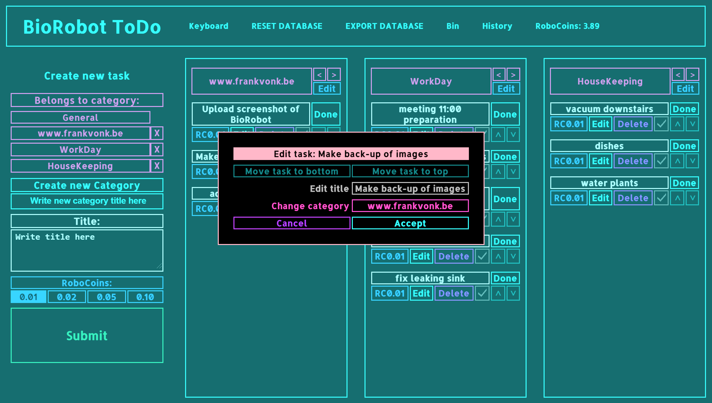
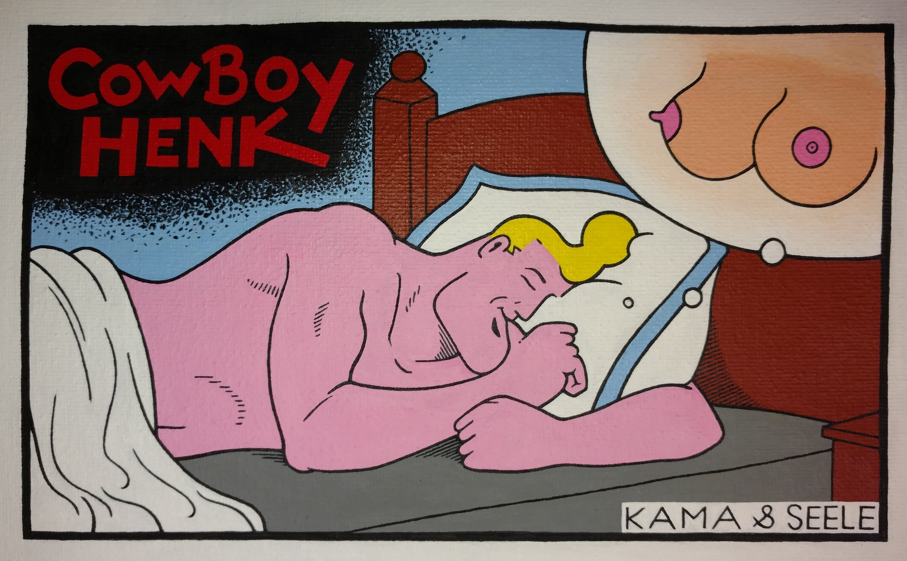
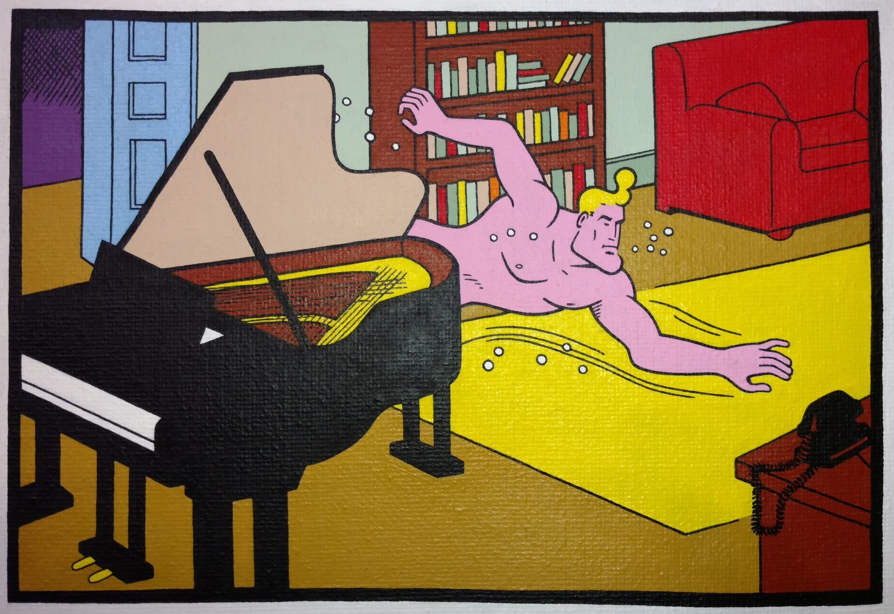
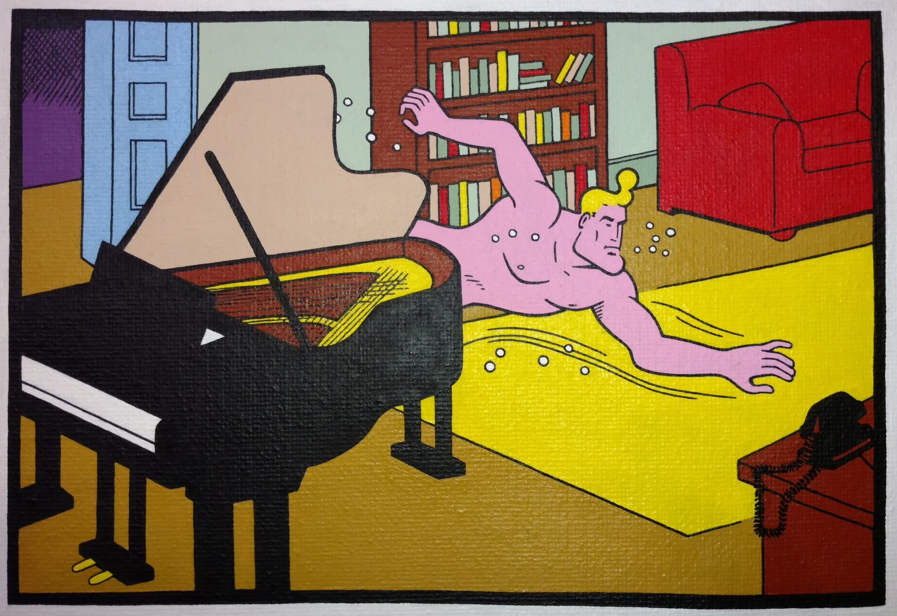
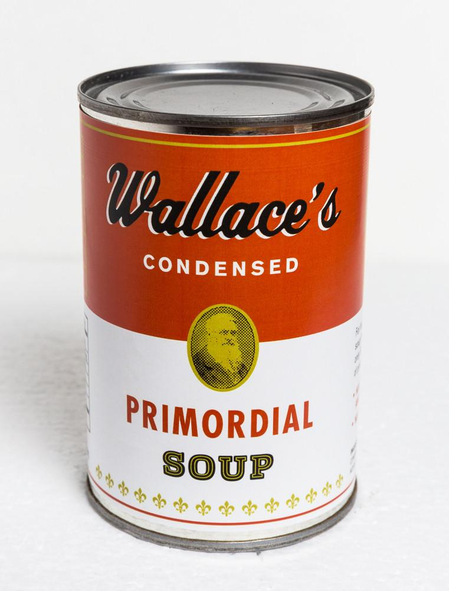
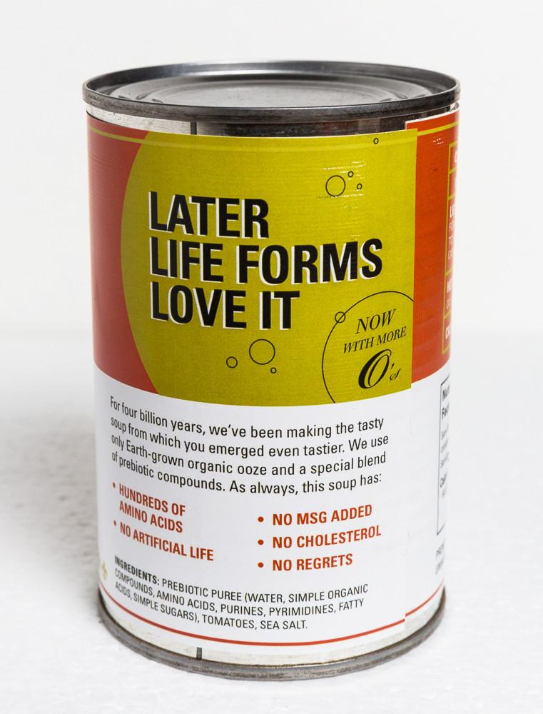

"BioRobot ToDo"
January 2021
A Handy TODO system.
I like turning complicated tasks in to simple subtasks. And for my household, I have a million small things to do.
As both my memory is not perfect anymore, and i'm kind of a procrastinator, it's easy to forget small things.
So, this system helps me in both dividing large endeavours in small manageable parts,
and to keep small tedeous from the back of my mind on the agenda.

Both the task, and the category it belongs to have an Edit button to let you rename or move it.

Be my guest and use it by clicking on THIS link.
Or read the Manual here.
HTML/JavaScript.
"House Designs"
Juli 2020
My city builder game.
I'm working on my JavaScript citybuilder videogame.
Little by little i'm adding more details to the designs of the buldings...
Liking the trees i created last night.
This is drawn using HTML Canvas, i just create a lot of rectangles to get to this.

Click THIS to play a very buggy first attempt at the game!
Digital Art, HTML/JavaScript.
"Royal Talens Cobra"
June 2020
My Cobra Collection.
After 3.5 years of saving my collection is finally complete!
Build a board for easy pickings of the tubes...
Royal Talens Cobra water mixable oil paint is my favorite paint.
I often sleep in the same room as where my paintings are drying.
So the complete lack of toxins and terpentine come as a miracle to me
"Intelligence"
September 2019
Green & Blues in Acrylics.
Back in 2012, I began working on this piece.
The darkest color green has been painted over at least six times. Tried Prussian, Kobalt, Sapgreen, Ultra, etc.
Unfortunately the colors i used (on this sixth attempt ;) are not easy to capture on camera.
There is no dark blue being used, it's a Turqoise Blue.
And it's even brighter and more saturated then it is in the sample i added below the photo.
As always, i'm showing it to you before it's finished.
The black lines need the most of my attention.
Acrylics on Cotton, 40 x 70 cm.
"Sierra"
September 2018
A personal Portrait in Acrylics.
I stumbled upon this photo on a "Pastel Goth" site.
I just could'nt stop myself from grabbing my paints and brushes together, and to have a go for it...
2 weeks later, this is what ended up on the spare canvas that i had lying around.

Painted version, Acrylics on Cotton
Reference Photo By Sierra Dawn
I am happy she liked it, and even shared it on her Instagram account.
Click HERE
to visit her page, She has a lot of beautiful photo's.
"Wet Dreams with Cowboy Henk"
August 2018
The last painting (picture 8), is not finished yet. As i currently spend a lot of time on my studies,
it might take a while before i have time to get to work on it.
Still I could'nt stop myself from sharing it with you in advance.



 



It is painted in acrylic paint on cotton,
60x45 cm.
And as you can see the canvas is not stretched yet.
"Boerentoren"
Juli, 2018
While i was watching the show "White Collar",
I saw a painting passing by that really intrigued me.
It was an Art Deco painting of the Chrystler building.
After some research, I found 2 paintings that i wanted to use as an inspirational assist for my own painting.
The tower i'm painting, is the iconic "Boerentoren", in my hometown of Antwerp.
It is also known as the "KBC Tower", as that's the name of the bank that's currently housed in it.
Making it 75 x 100 cm in Acrylics, it is quite a lengthy job. Combining it with my dayjob and other works of art,
we're 3 years in the making...
Here are the two examples:

This painting is from the series.

This is another one in the same style.
And here's my version so far:

I can't wait to see where it goes. I have changed the sun several times.
From red flames on it with Egyptian Hieroglyphs,
to one that shoots solar flares. In the end, i believe that less is more.
Therefore i changed it back by overpainting it with cadmiumyellow.
"Wisdom Tile"
Juli 2018
What more can i say ? We all learn the hard way ;) !
"Primordial soup"
June 2018
Welcome to my site!
It is not just still "under construction", it is more like a primordial soup at the moment.
Sorry for your inconvenience.
Please try again later.

